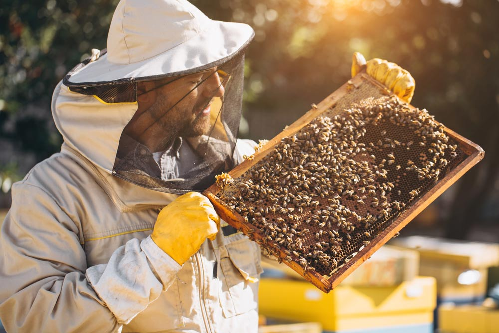
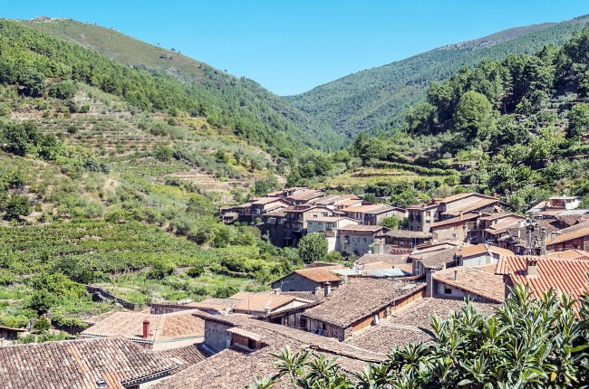

¿Quiénes somos?
Abejas y Zánganos es una empresa dedicada al cuidado, cría y preservación de las abejas. Nos especializamos en ofrecer un ambiente sostenible para estos polinizadores esenciales, asegurando su bienestar y fomentando prácticas apícolas responsables. Nuestra misión es conectar a las personas con la importancia de las abejas para el ecosistema y brindar productos de alta calidad derivados de su labor.
Productos:
En Abejas y Zánganos producimos miel pura, polen, jalea real y otros productos derivados de las abejas. Todos nuestros productos son 100% naturales, cosechados de manera sostenible y cuidadosamente procesados para garantizar su frescura y calidad. Con cada compra, apoyas nuestras iniciativas para proteger a las abejas y promover su conservación.
